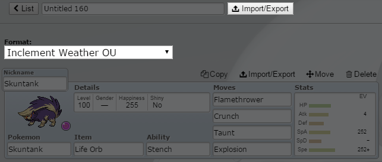
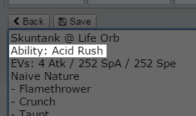
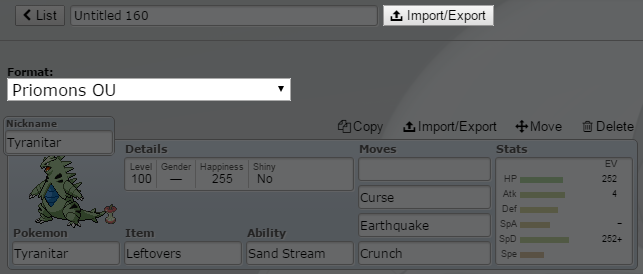
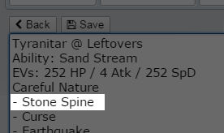

Short summaries on the custom battle formats exclusive to Sora.
The Inclement Weather format adds in a new weather type: Acid Rain!
New items and abilities were added to complement this new weather type. Changes were made to existing abilities
to work differently with Acid Rain, too!
Acid Rain's effects are as follows:
- All Pokémon take 1/16 of their maximum health in damage every turn, except if they are Poison-type or Steel-type
- Gunk Shot's accuracy is locked at 100%
- Ground-type attacks have their power reduced by 50%
- Poison-type Pokémon get a 50% increase to their Defense
Inclement Weather adds the following abilities:
- Contamination: When this Pokémon enters the battlefield, the weather becomes Acid Rain for 5 turns
- Acid Rush: When in Acid Rain, this Pokémon's Speed is doubled
- High Molar: When in Acid Rain, this Pokémon's STAB (Same Type Attack Bonus) is increased from 50% to 100%
- Toxic Overdrive: When in Acid Rain, this Pokémon gains 1.3x Attack and Special Attack, but loses 1/8 of its maximum health every turn
- Chemical Regeneration: When in Acid Rain, this Pokémon heals 1/16 of its maximum health every turn, and is immune to Acid Rain damage
Inclement Weather adds the following move and item:
- Contaminate (Move): For 5 turns, the weather becomes Acid Rain
- Molar Rock (Item): When Acid Rain is invoked by a Pokmon holding this item, the weather lasts for 8 turns instead of 5
Inclement Weather interacts with the following moves and abilities:
- Weather Ball (Move): Power doubles, and becomes Poison-type
- Immunity (Ability): Negates Acid Rain residual damage
- Poison Heal (Ability): Heals the user by 1/16 of its maximum health each turn
- Toxic Boost (Ability): Boosts physical attacks by 1.3x when in Acid Rain
The full list of Pokémon who get these abilities and moves can be found here.
Since Sora doesn't have its own custom client, some workarounds are necessary to use the new moves and abilities.
To do so, you need to change them manually from the Import/Export section. Make sure the format selected is Inclement Weather, too!

From here, you can manually change the ability and moves to a custom one. Save after that, and you're good to go!

Priority moves have been a great boon to many Pokémon, but its distribution and variety feels somewhat lacking. This format aims to fix that.
A few priority moves were distributed more, while new priority moves were created for other types.
The following is a list of the changes in this format:
Pre-existing Moves
- Fairy Wind: 40 BP | 100% Acc | Special | Fairy-type | Priority: +1 | Usually goes first
- Aqua Jet: Distribution extended to include Swampert
- Mach Punch: Distribution extended to include Darmanitan
New Moves
- Flame Shot: 40 BP | 100% Acc | Physical | Fire-type | Priority: +1 | Usually goes first
- Nerve Pulse: 40 BP | 90% Acc | Special | Electric-type | Priority: +1 | Always results in a Critical Hit
- Tremor Shock: 30 BP | 100% Acc | Physical | Ground-type | Priority: +1 | Removes stat boosts
- Diving Charge: 60 BP | 100% Acc | Physical | Flying-type | Priority: +1 | User suffers 25% recoil
- Venom Strike: 30 BP | 95% Acc | Physical | Poison-type | Priority: +1 | 30% chance to badly poison the target
- Sap Blast: 40 BP | 100% Acc | Physical | Grass-type | Priority: +1 | Usually goes first
- Stone Spine: 55 BP | 90% Acc | Physical | Rock-type | Priority: +1 | Usually goes first
- Draco Crash: 50 BP | 90% Acc | Physical | Dragon-type | Priority: +2 | Nearly always goes first
- Kinetic Force: 50 BP | 90% Acc | Special | Psychic-type | Priority: +1 | Usually goes first
The full list of Pokémon who get these moves can be found here.
Since Sora doesn't have its own custom client, some workarounds are necessary to use the new moves.
To do so, you need to change them manually from the Import/Export section. Make sure the format selected is Priomons, too!

From here, you can manually change the first slot of the moves to a custom one.
Do note that the Priomons move needs to be on the first slot, nowhere else, or it won't work properly.
Save after that, and you're good to go!

Pokémon Sandbox is a combination of STABmons, Hackmons, Ability Shift, and Tier Shift, with some additional rules mixed in.
If this confuses you, don't worry! Here are the exact rules for this format:
- A Pokémon is allowed to use any move it naturally learns, and any move that matches its type
- A Pokémon is allowed to use any ability it naturally gets, or any ability that comes before of after said ability in alphabetical order
- Mega Pokémon can hold items other than their Mega Stones; just pick the Mega form from the teambuilder
- All Pokémon above Smogon OU are banned, with the following exceptions:
Mega Mawile, Aegislash, Mega Blaziken, Mega Gengar, Mega Lucario, Shaymin-Sky, Genesect, Deoxys-Speed. Deoxys-Defense
- Regigigas and Slaking are banned
- Wonder Guard is banned from all Pokémon barring Shedinja